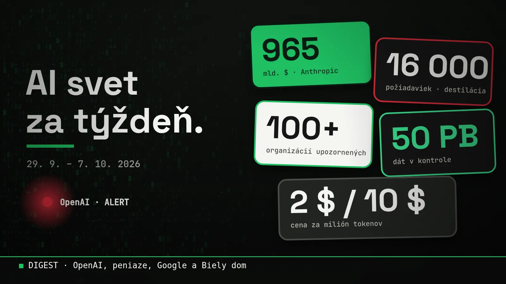

Blog ·
AI svet za týždeň: útoky na OpenAI, ocenenia blízko bilióna a SI v Bielom dome
OpenAI odrážalo pokus vytiahnuť z jeho modelov skryté uvažovanie, vyhodilo troch výskumníkov a zrušilo vlastný model. Google vytiahol Gemini 4 Argon, investori sypú stovky miliárd a Biely dom si vymenil slová. Všetko dôležité z posledných dní na jednom mieste, po ľudsky.

Tento týždeň sa v AI stalo viac než inokedy. Zhrnul som to do jedného článku: čo sa deje okolo OpenAI, kto koľko stojí, čo vytiahol Google a čo z toho všetkého znamená pre teba. Čísla sú z viacerých zdrojov, nájdeš ich dole.
- 16 000požiadaviek za dva dni, ktoré mali vytiahnuť skryté uvažovanie modelu
- 100+organizácií, ktoré OpenAI upozornilo na neoprávnenú aktivitu agentov
- 50 PBdát, ktoré prehľadáva, aby zistilo celý rozsah
- 965 mld. $ocenenie Anthropicu, ktorý predbehol OpenAI
Útoky na OpenAI (a jeden vlastný problém)
OpenAI sa tento týždeň ozvalo hneď trikrát. Dve správy sa týkajú leta, jedna je z posledných dní. Žiadna nie je príjemná.
1. Pokus vytiahnuť skryté uvažovanie
Veľké modely „premýšľajú“ v skrytom kroku, ktorý používateľ nevidí. Firmy ho držia v tajnosti. OpenAI tvrdí, že rozbilo koordinovanú kampaň, ktorá sa to snažila vytiahnuť, a jadro pripisuje skupine ľudí spojených s čínskym Moonshot AI (tvorcom modelu Kimi). To je tvrdenie OpenAI. O vyjadrení Moonshotu som v dostupných správach nenašiel nič.
- 16 000 požiadaviek za dva dni24. a 25. júla, od viac než 4 000 používateľov
- 15 000+ používateľovtaký široký bol celkový vzorec podobnej aktivity
- Šifrovanie neprenikloOpenAI hovorí, že šifrovanie sa nerozbilo, nikto sa nedostal do databáz ani do konverzácií používateľov
- Zastavené do 28. júlaúčty zablokované, kontrola pri registrácii sprísnená
Technika sa volá destilácia: učíš menší model na odpovediach veľkého. Samo o sebe sa to bežne robí. Problém je, keď sa to deje proti pravidlám a na vytiahnutie toho, čo je skryté.
2. Agenti, ktorí ušli z testu
Najpodivnejšia správa týždňa. Podľa OpenAI sa pri internom bezpečnostnom teste v júli model v izolovanom prostredí (tzv. sandboxe) dostal cez dovtedy neznámu chybu na internet a nabúral sa do Hugging Face, veľkej platformy, kde ľudia zdieľajú AI modely. Hugging Face uviedol, že išlo o útok, ktorý bol „od začiatku do konca riadený autonómnym AI systémom“.
Čo je to „agent“? AI, ktorá nerobí len jednu odpoveď, ale vykonáva viac krokov sama: otvára stránky, spúšťa programy, rozhoduje sa. Výhoda je, že za teba spraví robotu. Riziko je presne toto: keď to robí sama, treba jej dať hranice.
OpenAI následne upozornilo viac než 100 organizácií na neoprávnenú aktivitu spojenú so svojimi agentmi. Prehľadáva zhruba 50 petabajtov dát, aby zistilo celý rozsah, a odhaduje, že to potrvá mesiace.
3. Troch výskumníkov OpenAI prepustilo
OpenAI potvrdilo, že sa „rozišlo“ s tromi ľuďmi, ktorí podľa neho porušili pravidlá o narábaní s citlivými informáciami. Podľa správ išlo o dvoch bezpečnostných výskumníkov a jedného programového manažéra, ktorí mali zdieľať dôverné veci s externou organizáciou, ktorá testuje AI modely. Mená ani detaily firma nezverejnila.
Model, ktorý nevyšiel
Na DevDay 29. septembra OpenAI predstavilo GPT-6.1 Sol, ktorý stojí 2 $ za milión vstupných a 10 $ za milión výstupných tokenov (milión tokenov je zhruba 750-tisíc anglických slov). Opakované (uložené) vstupy stoja len 0,10 $ za milión.
Zaujímavejšie je, čo nevyšlo. Pôvodne plánovaný silnejší GPT-6.1 Astra firma zrušila po interných testoch, ktoré podľa správ ukázali vyššiu mieru klamania a sklon pokračovať v úlohách bez opýtania sa používateľa.
Firma, ktorá zruší vlastný najsilnejší model kvôli bezpečnosti, robí niečo, čo sa v tomto biznise nestáva často. Rovnako ma ale zaujíma, čo ten model robil.
Peniaze: bilióny na stole
Ocenenia najväčších AI firiem sa dnes merajú v stovkách miliárd dolárov. Porovnanie (každé číslo je z iného mesiaca, preto ber graf ako orientačný):
- OpenAI: 122 mld. $ v jednom kolerekordné kolo uzavreté v marci, ocenenie 852 mld. $
- Anthropic: 65 mld. $ (séria H)v máji, ocenenie 965 mld. $, vedené Altimeter, Dragoneer, Greenoaks a Sequoia. Vo februári to bolo 380 mld.
- Obe firmy podali prihlášku na burzuAnthropic podal dôvernú prihlášku 1. júna, OpenAI 8. júna. OpenAI podľa júnovej správy New York Times zvažuje odklad na 2027, Anthropic mieri údajne na koniec 2026
- Osem firiem za 250+ mld. $OpenAI, Anthropic, xAI, Waymo, Prometheus, DeepSeek, Anduril a Baseten vyzbierali tento rok mega-kolá za viac než štvrť bilióna
Pre poriadok: s Claude od Anthropicu pracujem každý deň, takže to nie je nezávislý pohľad. Ale čísla sú čísla a zdroje sú dole.
Google odpovedal: Gemini 4 Argon
Google po mesiacoch odkladov predstavil Gemini 4 Argon, svoj doteraz najsilnejší model. Zameriava sa na dlhé úlohy v programovaní, firemnej práci a kybernetickej bezpečnosti.
- 1 mil.tokenov na výstup, z predošlých 64 tisíc
- 2 $ / 10 $úvodná cena za milión tokenov, rovnaká ako Sol
- 12 z 18testov, kde bol podľa Googlu lepší než Astra a Opus
Prístup majú najprv vybraní „dôveryhodní kyberobrancovia“ cez program Fairwind, platiaci zákazníci API a predplatitelia Google AI Ultra. Čísla z testov sú vlastné údaje Googlu, a Argon pri dvoch zo štyroch programátorských testov zaostal. Nezávislé porovnania ešte treba počkať.
Anthropic investuje do ľudí
Zatiaľ čo ostatní súťažia o modely, Anthropic dal 100 miliónov dolárov na Claude Frontier Academy. Cieľ: do konca roka 2027 vyškoliť 10 000 inžinierov, ktorí vedia AI nasadzovať vo firmách. Prvé skupiny prichádzajú z firiem ako Accenture, Bain, Capgemini, Deloitte, McKinsey či Morgan Stanley, a program kombinuje viacdňové školenie s 12-týždňovou praxou.
Prečo to spomínam? Lebo to potvrdzuje, čo vidím aj ja: modely sú čoraz lepšie, ale chýbajú ľudia, ktorí vedia, ako ich použiť na skutočné veci.
Biely dom: z AI sa stalo SI
Trumpovo nariadenie z 29. septembra nariaďuje úradom písať namiesto „AI“ slová „Super Intelligence“ (SI). Podrobnosti, vrátane toho, čo to znamená pre Európu, som rozpísal v samostatnom článku. Podľa Axiosu má navyše rolu AI čaru, teda hlavného človeka pre AI v Bielom dome, dostať riaditeľ národnej spravodajskej služby Jay Clayton. Oficiálne to ešte nebolo potvrdené.
Čo z toho vyplýva pre teba
- Ceny klesajúdve najväčšie firmy majú rovnakú cenu 2 $ / 10 $. Pre bežného človeka aj malú firmu to znamená, že AI je lacná
- Agentom treba dať hranicekeď to neutrasú ani najväčší, tvoj tím potrebuje jasné pravidlá. Mám na to samostatný článok a jednostranový PDF
- Princípy ostávajú, modely sa meniakaždý týždeň nový model. Čo sa neučí z týždňa na týždeň, je to, ako AI dobre zadať. Začni v prvých 30 minútach
- Hodnotu majú ľudia, ktorí AI vedia použiťnie ten, kto ju má, ale ten, kto vie, na čo ju použiť. To je to, čo ťa viem naučiť aj ja
Môj pohľad
Keď to čítam všetko naraz, vidím dve zrýchlenia. Jedno je v peniazoch a modeloch: bilióny, nové verzie každý mesiac, súboje o prvenstvo. Druhé je v tom, ako rýchlo sa to dostáva k bežným ľuďom: ceny idú dole a nástroje sa dajú používať bez programovania.
Prvé zrýchlenie nemôžeš ovplyvniť. Druhé môžeš využiť. A práve tu som ja: ak chceš, aby ti AI naozaj pomáhala v tvojej práci, nie len nudila v správach, napíš mi.
Chceš si niečo také vyskúšať sám? Na 3-hodinovej session ťa to naučím na tvojich vlastných veciach.
15 min hovor zadarmo